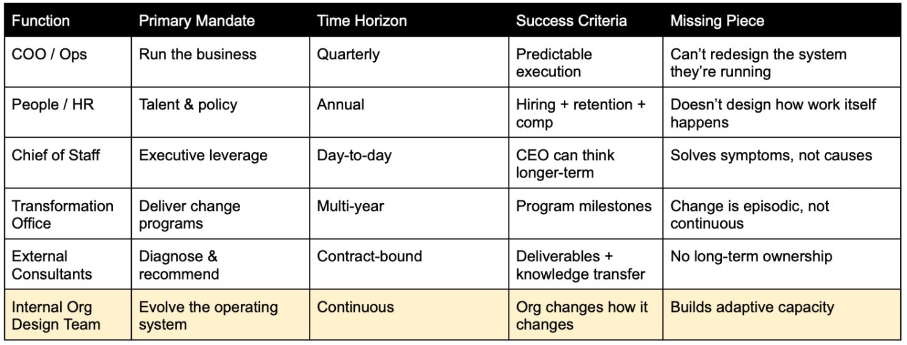

After unexpectedly losing the job I moved across the country for in 2015, I published an article called "Creating an Organizational Design Consulting Firm for the 21st Century." It was an attempt to publicly articulate the kind of work I wanted to be doing—working at a consulting firm that treated organizational design as a living discipline rather than a one-time intervention.
That article did exactly what I hoped it would do. It found its way to the right person, Aaron Dignan, which led to me joining his new company called The Ready, where I spent the next decade doing almost precisely the work I described in that article.
After stepping away from The Ready in late 2025 to explore new options, I decided to run this play again and call a new shot. This time, the argument isn't about the future of organizational design consulting, but rather why most modern organizations need to bring that capability inside.
The Missing Capability in Most Organizations
Most companies today are decent at optimizing within an operating model, but very rarely competent at evolving the operating model itself.
We have teams responsible for product, revenue, operations, people, technology, risk, compliance and every other function needed to run a given org. Every one of these functions has a legitimate claim on leadership attention and every one of them is incentivized to prioritize its own domain. Of course, each of them is led by leaders who will talk a good game about doing what's best for the organization, but we all know that when push comes to shove, their first allegiance is usually to their area of responsibility.
Very few (yet more and more all the time!) organizations have a role or group whose primary responsibility is the care and feeding of the organization itself. Not performance this quarter, not headcount planning, not process compliance, but rather the living and breathing system itself.
This concept is called the organizational operating system—the patterns, principles, and practices that describe every aspect of how an organization works and what it feels like to interact with it. Its structures, decision-making, patterns, ways of working, and its ability to change any of them to adapt without falling into chaos. I am talking about creating a dynamic OS where the dreaded re-org is a rarely used break-glass-in-case-of-emergency solution instead of the only tool available.
When this responsibility exists at all, it is usually thinly stretched across roles that already have full plates: the executive team, the COO, the Chief of Staff, the CHRO, the head of transformation. Everyone owns a piece of the org—but no one owns the org as a system.
Our work at The Ready would often be focused on kickstarting this process before ultimately handing it over to an internal team to continue stewarding the work once we left. We were always adamant that there was no finish line for the type of work we were trying to do so while there was always an end date on our contract, the work of continuous evolution never ends. Unfortunately, there were many projects where even though we were obsessed with co-creating with the client and building capacity as we went, there wasn't really a "home" for the work once our contract ended. It was nobody's full-time work to continue stewarding what we had been doing together and that often meant it often fizzled out once we left.
"Design Once, Run Forever" is Not Modern Organization Design
For decades, organizations operated under an implicit assumption: design the org, roll it out, then let it run. Even when this worked, it only worked under conditions that no longer exist—relative market stability, slower feedback cycles, and work that could be decomposed cleanly into roles and hierarchies that were unlikely to change much over time.
Today, those assumptions collapse almost immediately. Everything and anything that's interesting in a typical organization tends to be cross-functional—which means everything feels hard to do. Most orgs can't easily metabolize cross-functional efforts so even the things that should feel easy rarely are.
But rejecting "design once, run forever" does not mean getting trapped on the re-org treadmill. Constant reshuffling is just as destructive as ossification, but it often seems to be the only available option in the organizational change playbook. Don't like how things are going? Well, we're just about due for our 18-month reorg and the massive disruption it inevitably creates. These are the missed opportunities—there are places to intervene and influence an OS other than the entire structure itself.
What's required instead is a shift in posture: from organization design as a project handed to consultants or an under-resourced People team or a super-human Chief of Staff to do from the side of their desk—to organization design as an intentionally ongoing capability.
An Internal Innovation Lab Focused on the Organization Itself
One useful metaphor may be the internal innovation lab.
Not a skunkworks for products—a standing team responsible for researching, designing, developing, and experimenting with the organizational systems that make future performance possible.
This "lab" is:
- Building the conditions for sustained organizational excellence
- Reducing friction and organizational debt before it becomes existential
- Experimenting safely with new ways of working
- Increasing the productivity of every other team through better inter- and intra-team dynamics
- Creating playbooks and processes for smoother cross-functional collaboration
- Treating the organization itself like a product that needs iteration
In practical terms, this kind of team will work across three modes:
- Research and Sensing: Deep listening, sensing, and pattern recognition. Surfacing credible, human-centered insight about how work actually happens—not how the org chart claims it happens.
- Testing and Design: Architecting and prototyping org-level solutions like structures, decision rights, governance models, talent systems, collaboration patterns, and service blueprints.
- Development & Iteration: Building the capabilities required to sustain those changes through leadership development, change activation, coaching, onboarding, and internal communities of practice.
The output isn't a single reorg deck. It's a portfolio of services, standards, experiments, and capabilities that compound over time.
A standing internal organization design team reduces the number of moments where leadership must personally intervene to resolve structural problems. Every senior leadership team I've ever worked with has talked about doing things to reduce escalations and almost never have I ever seen them have the capacity to change the system that is creating the need for escalations. It turns strategy into something the organization can absorb rather than something that needs to be enforced. It makes adaptation cheaper, faster, and less disruptive.
Over time, this capability compounds. Decisions get easier and coordination costs drop. The organization becomes more resilient—not because leaders are working harder and longer, but because the system itself is doing more of the work. The best of these teams will bring sanity to the present so they can start freeing up their attention to exploring what their future operating system will need to be so they can start testing out those shifts before they become existential.
Unlocking Potential Energy is the Fastest ROI
Most organizations are sitting on an extraordinary amount of trapped potential energy. Not because their people aren't capable or because the strategy is wrong, but because outdated ways of working, accumulated organizational debt, and brittle systems absorb an enormous amount of effort before any productive work happens.
This shows up everywhere, and you may even recognize a couple in your own organizations:
- Teams spending more time coordinating than creating
- Decisions waiting on escalations that add no real value
- Cross-functional work slowing to a crawl because decision rights and ways of working are unclear
- Talented people compensating for structural gaps through heroics
From the outside, this looks like execution problems. From the inside, it feels like exhaustion.
The important thing to understand is that this energy is already being spent. It's just being dissipated as friction instead of converted into results. An internal organization design team only needs to unlock a small percentage of that trapped energy and redirect it toward productive ends to pay for itself.
This is why teams like this often pay for themselves faster than expected. Not because they introduce something new—but because they stop the organization from leaking energy it can no longer afford to lose.
Why This Must Be Internal
External consultants can be useful sparks and accelerants (I know because I've been one for the past decade!) but they are rarely good long-term stewards because they don't have skin-in-the-game or the deep contextual understanding of full-time team members who live and breathe the realities of their organizations everyday. I have been shown over and over, and now firmly believe, that the relevant time horizon for this type of work is far longer than what most orgs want to invest in an external consulting team.
Beyond the time component, this work is also deeply contextual when done well. It requires an intimate understanding of the organization's history, power dynamics, narratives, and "vibes"—the things people feel but don't put on slides. Internal teams develop the kind of organizational fluency that makes better sense-making possible. They understand what's being left unsaid, how informal networks actually work, how decisions actually get made rather than how the on-paper process describes, and how change actually propagates through the system.
We often tell ourselves that giving this work to an external entity to do helps mitigate the inherent power dynamics that are always lurking in organizations. I've come to see that consultants aren't as neutral as they seem, as there's always leader(s) who are paying for them, who advocate for them, and see them as (even implicitly) as being recruited into "their side." Bringing this work inside the wall of the org does not eliminate inherent power dynamics, but it can bring those dynamics to the foreground where they can be discussed and wrestled with more openly.
Isn't This Just a Transformation Office?
On the surface, this can look like a more mature version of a Transformation Office. But there is a critical and fundamental difference. Transformation Offices exist to deliver specific change on a specific schedule. Internal organization design teams exist to grow the organization's capacity to change forever.
One is temporary, program-driven, and milestone-oriented. The other is permanent, system-focused, and oriented toward reducing the need for future transformations altogether. In organizations that make this shift, change stops being something that happens to the organization and becomes something the organization can do for itself.
In some ways, I think the best Transformation Offices are the precursors to what I'm talking about in this article. A good Transformation Office understands that their job is not just ramming through the discrete projects on their docket, but integrating these changes in a way that has a chance of actually surviving and therefore generating the desired outcomes. A good Transformation Office is not just a bevy of project managers begging the organization to use a new tool, but trying to ride the waves that come with trying to steward and guide a complex organization toward a better future.

The Future of Work is Right Now
As environments become more complex, organizations need people whose only job is to help the organization increase coherence. To keep it from calcifying on one end or burning itself out on the other. This team does not replace the CEO, COO, Chief of Staff, or the People function. It does something different.
It owns the health of the organizational operating system itself—so that every other leader can focus on results rather than constantly compensating for structural friction. In organizations that get this right, senior leaders spend less time managing around the system—and more time using it.
I'm writing this from experience, not theory. Over the past decade, I've helped build and steward this capability inside fast-growing, high-complexity organizations navigating real constraints. I've seen what happens when organization design is treated as a living discipline rather than a single intervention—and I've seen the cost when it isn't. The conclusion I've come to is simple:
The next frontier of performance isn't strategy or talent—it's the ability to change how you change. And that capability can only be built from within.
Context matters too much, learning compounds too slowly, and the cost of trapped potential energy is too high. If you're a senior leader reading this, the decision isn't whether your organization needs to change right now, but rather whether you want to build the capacity to change deliberately—or continue paying for it indirectly through friction, burnout, stalled execution, and increasingly risky reorganizations. Organizations that invest in internal organization design teams gain something rare: the ability to change how they change.
I'm exploring my next chapter with organizations that are ready to make that investment, whether by building this capability from scratch, strengthening what already exists, or finally giving it clear ownership and mandate.
If you believe your organization's biggest constraint is no longer strategy or talent, but the operating system that connects them, I can't wait to talk.